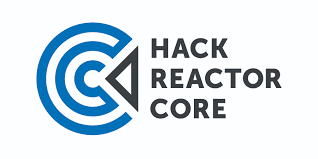
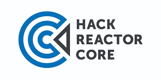

Eloquent JavaScript
3rd edition
This is a book about JavaScript, programming, and the wonders of the digital. You can read it online here, or get your own paperback copy.
Written by Marijn Haverbeke.
Licensed under a Creative Commons attribution-noncommercial licenses. All code in this book may also be considered licensed under an MIT license.
Illustrations by various artists: Cover and chapter illustrations by Madalina Tantareanu. Pixel art in Chapters 7 and 16 by Antonio Perdomo Pastor. Regular expression diagrams in Chapter 9 generated with regexper.comby Jeff Avallone. Village photograph in Chapter 11 by Fabrice Creuzot. Game concept for Chapter 15 by Thomas Palef.
The third edition was made possible by 325 financial backers, most notably and  . The second edition was supported by 454 backers, with significant contributions from
. The second edition was supported by 454 backers, with significant contributions from  , , .
, , .